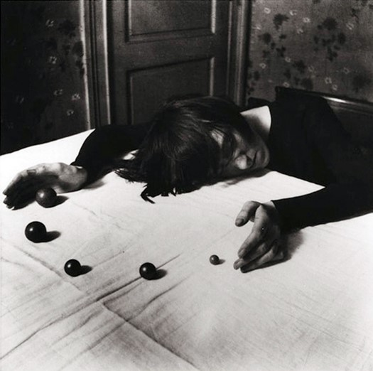

LA BELLEZA
DE LO RARO
En esta obra, el fotógrafo belga Paul Nougé se burla del sentido de las cosas.
¿Por qué no tiene sentido que una malabarista haga así sus malabares? ¿Qué puede significar la foto?
¿Sabes hacer malabares con pelotas? ¿Con cuántas?


Paul Nogué, La malabarista, 1929-1930.
Archives et Musée de la Littérature, Bruselas